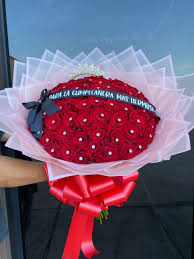
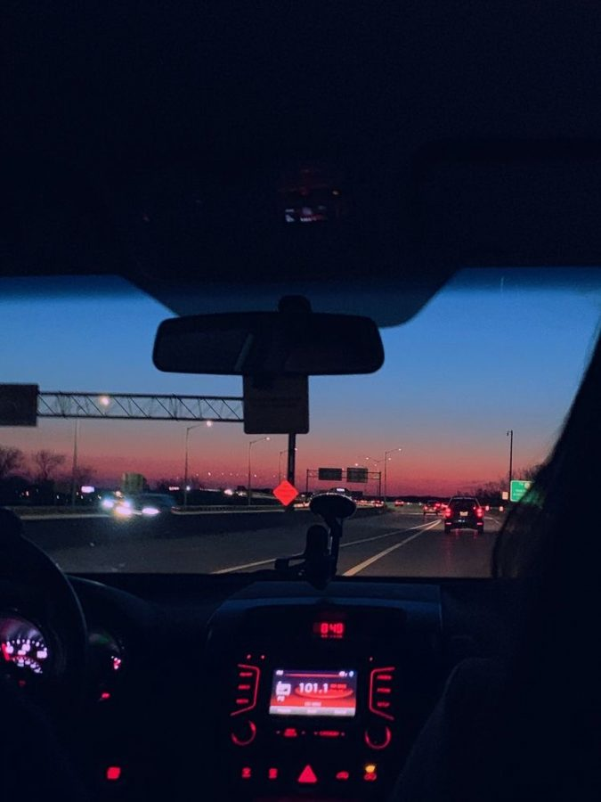

Hobbies
One of my favorite things to do when I have free time is play volleyball. I played all of my high school years.

I love making rose bouquets both real and eternal. I recently started my own flower business and it is going well.
One thing I really enjoy is going on late-night rides in the summer to help ease my mind.
